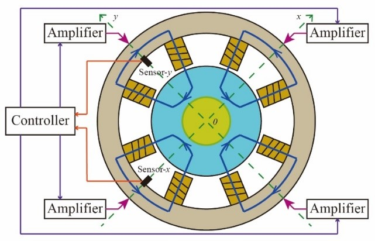
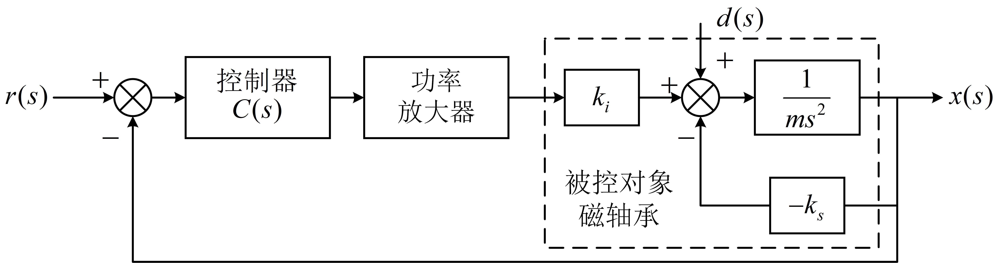
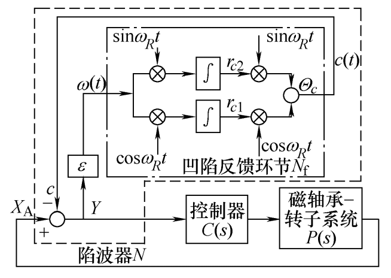
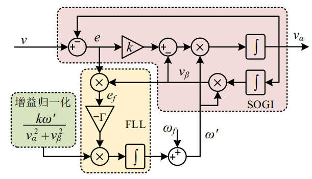
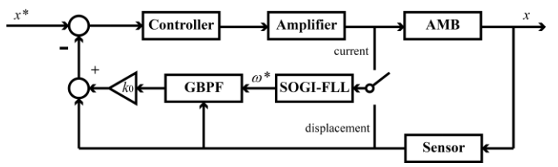

磁轴承位置控制模型¶
基于 AMB_Simulation_Lib/DisplaceLoop/displacelooppara.m
1 基本模型¶
AMB_Simulation_Lib/DisplaceLoop/Basic.slx
振动是旋转机械中普遍存在的问题，当转子的几何中心与质心不重合时，转子旋转过程会产生与转速同频的离心力扰动，进而在使得转子径向位移产生振动，离心力是振动的主要来源。当转子由磁悬浮轴承支撑时，位移的振动会导致磁轴承电流出现波动，不平衡力也通过磁轴承传导引起机壳与支座振动。而磁悬浮轴承相对于传统机械轴承的主要优势在于其可产生主动控制力，这对于抑制转子位移振动或降低机壳等外部支撑部件的振动提供了良好的解决方案。


2 线性模型与非线性模型¶
AMB_Simulation_Lib/DisplaceLoop/Linear & Nonlinear.slx
执行器对转子的吸引力为与位移平方成反比，与电流平方成正比的非线性力。为了进行线性控制系统设计，在转子位移远小于气隙的假定下对执行器的电磁力进行线性化。线性化的轴承力为含力-电流刚度、力-位移刚度的线性模型。该仿真旨在对比线性化模型与非线性模型的运行区别，并验证线性化结果的有效性与正确性。
3 零电流控制与零作用力控制¶
AMB_Simulation_Lib/DisplaceLoop/NTC_ZC_ZF.slx
磁悬浮轴承的转子承受的力在经过线性化后，主要由电流项和位移项共同决定。通过减小磁悬浮轴承上转速同频力来进行振动抑制方法主要有零电流控制与零作用力控制两种。
3.1 零电流控制¶
电流指令是由传感器所采集的转子位移经过位置控制器生成的，电流波动（振动）的原因主要是位移信号中存在与转速同频的信号。较大的电流波动可能会导致轴承功放饱和，基座振动加剧，或引起系统失稳。应用自适应陷波器将位移信号的转速频以及倍频分量滤除是降低电流振动的常用方法。 由于同频干扰是位移信号中频率为\omega_R的正弦量，因此可以采用中心陷波频率随转速变化的自适应陷波器对其进行去除。自适应陷波器工作原理如下图所示，陷波器N的核心是凹陷反馈环节N_f，其中心频率可依据转速变化而改变， \epsilon决定陷波器 N(s)的收敛速度和中心陷波带宽。

陷波器反馈环节N_f的传递函数为
陷波器整体的传递函数N_O为
陷波器在使用时需要考虑系统的稳定性问题，根据被控对象传递函数，在磁轴承转速高低两种情况下需要进行符号的切换。
3.2 零作用力控制¶
磁轴承的载荷主要由电流力与位移力两部分构成（F=k_ii+k_xx），若希望消去轴承载荷力的振动，还应将k_xx项消去，常见的方法为前馈消去法。用自适应陷波器提取位移中的同频分量后，选取合适的前馈增益，将k_xx项中的同频分量抵消。偿机构中K=K_h/K_i，为磁轴承位移刚度与电流刚度的比值。
4 转速辨识与位移振动抑制¶
AMB_Simulation_Lib/DisplaceLoop/SOGI_NTC_FARWARD
采用基于二阶广义积分-锁频环（SOGI-FLL）的转子频率估计法。SOGI-FLL主要包括二阶广义积分模块、锁频环模块以及增益归一化模块。其中，v_\alpha、v_\beta为SOGI的两相输出，e为 SOGI的估计误差，e_f为FLL的估计误差，\omega_f为初始触发频率， \omega^,为估计频率。

若对位移振动进行抑制，可对位移信号的转速频分量进行放大，经由位置控制器产生相应的控制信号。若简单地增加采样增益，则谐波与噪声成分也会被放大，不利于系统稳定，因此只增加转速频成分增益是振动抑制的关键。通过二阶广义积分-锁频环（SOGI-FLL）后接广义带通滤波器（GBPF）的方法从控制电流信号中提取振动频率。若由位移信号对转速信号进行提取，则SOGI可同时生成位移信号的转速频分量，将其前馈至位移信号中可提升增益；若由电流信号对转速信号进行提取，则需增加一个同频位移提取环节，采用自适应窄带带通滤波器提取，振动抑制策略见下图。
